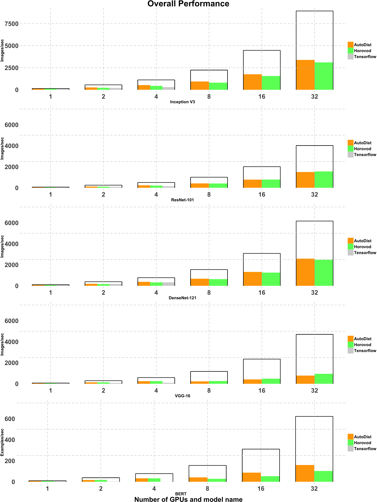
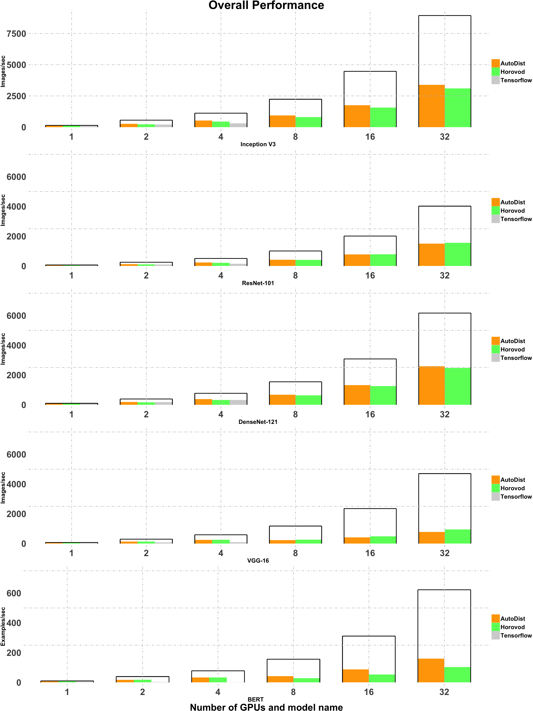

AutoDist is a distributed deep-learning training engine. AutoDist provides a user-friendly interface to distribute the training of a wide variety of deep learning models across many GPUs with scalability and minimal code change.
AutoDist has been tested with TensorFlow versions 1.15 through 2.1.
Introduction¶
Different from specialized distributed ML systems, AutoDist is created to speed up a broad range of DL models with excellent all-around performance. AutoDist achieves this goal by:
Compilation: AutoDist expresses the parallelization of DL models as a standardized compilation process, optimizing multiple dimensions of ML parallelization ranging from synchronization, model partitioning, placement to consistency.
Composable architecture: AutoDist designs a flexible backend that encapsulates various different ML parallelization techniques, and allows for composing distribution strategies that interpolates different distributed ML system architectures.
Model and resource awareness: Based on the compilation process, AutoDist analyzes the model and generates more optimal distribution strategies that adapt to both the ML properties and the cluster specification.
Besides all these advanced features, AutoDist is cautiously designed to isolate the sophistication of distributed systems from ML prototyping, and exposes a simple API that makes it easy to use and switch between different distributed ML techniques for all-level users.
 

Using AutoDist¶
Installation:
pip install autodist
It should be incredibly easy to modify existing TensorFlow code to use AutoDist.
import tensorflow as tf
from autodist import AutoDist
ad = AutoDist(resource_spec_file="resource_spec.yml")
with tf.Graph().as_default(), ad.scope():
########################################################
# Build Your Model Here and Train it Distributedly
########################################################
sess = ad.create_distributed_session()
sess.run(...)
References & Acknowledgements¶
We learned and borrowed insights from a few open source projects including Horovod, Parallax, tf.distribute.